SnakeGuard: detection, explainability and demo
Jay Vishal Parikh (24BAI0143) · Fida M S (24BAI0180). Every number on this page comes from the files in results/. Click any image to enlarge it.
Suggested order for the review (about 15 min)
- Live demo first (3 min): open the app, upload a snake and then a look-alike, show both heatmaps. See Live demo.
- Detector (1 min): mAP and "no snake/look-alike confusions on test".
- XAI comparison, detector (5 min): the deletion/insertion table, the bar charts, and the 7-method heatmap grid. Jay
- Venom classifier + its XAI (4 min): recall 95 %, its XAI comparison, the same winner. Fida
- Conclusion (1 min): LayerCAM (multi-scale) is the default explainer, and occlusion is the slow audit check.
Live demo
Start the app before the review starts (it loads in about 10 s). Close games and other GPU apps first.
cd C:\Users\jaypa\Desktop\Jay\Projects\SnakeDetection_XAI .venv\Scripts\python scripts\app.py
Then open http://127.0.0.1:7860. Sample inputs are in results\demo_samples\ (checked, all detected correctly):
| File | What it shows | Result we got |
|---|---|---|
| snake_1.jpg | green vine snake at night | snake 0.80, venom flag, threat 73 |
| snake_4.jpg | coiled red snake | snake 0.76, venom flag, threat 74 |
| snake_3.jpg | snake on asphalt | snake 0.85, likely harmless, threat 53 |
| lookalike_2.jpg | mangrove roots | 3 look-alikes, no alert, threat 0 |
| lookalike_3.jpg | rope underwater | look-alike, no alert, threat 0 |
| demo_clip.mp4 (Video tab) | look-alike → snake → look-alike → snake | alert only when a snake has been seen in 3 of the last 5 frames |
- Photo tab: upload, then click Analyze. It shows boxes, the verdict, the threat and beep rate, the detector heatmap ("why it fired") and the venom heatmap.
- Tick Audit mode to add occlusion + RISE (slower, about 5 s), to show that two different method families agree.
- The first photo after starting takes about 4 s (GPU warm-up); after that it's well under 1 s.
- Live tab: click the camera → allow → Record, click the page once (for sound), then hold a snake photo (on a phone) in front of the camera. Move it closer and the threat rises and it beeps faster; a cable or rope gives no alert.
- The Video tab processes up to 30 s at about 5 fps. On Windows the console prints an "OpenH264" error. That's harmless: it falls back to another codec.
If the app fails during the review, show the pre-made app output below instead.
Detector (YOLO11n): test set, 841 images


XAI comparison on the detector: 868 detections, test set
Nine explainers and two baselines, all scored with the same metrics. Deletion: remove the most important pixels first; the score should drop fast (lower = better). Insertion: add them back to a blurred image; the score should rise fast (higher = better). Sanity: randomize the head weights; a real explanation should change (lower = better).
| Method | Family | Deletion ↓ | Insertion ↑ | Pointing game ↑ | Energy in box ↑ | Sanity (head) ↓ | Time |
|---|---|---|---|---|---|---|---|
| LayerCAM (P3–P5) | gradient | 0.082 | 0.765 | 0.970 | 0.898 | 0.27 | 27 ms |
| Occlusion | perturbation | 0.077 | 0.846 | 0.974 | 0.711 | 0.10 | 1,238 ms |
| D-RISE | perturbation | 0.080 | 0.816 | 0.983 | 0.744 | – | 4,233 ms |
| Grad-CAM++ (P3–P5) | gradient | 0.152 | 0.577 | 0.402 | 0.439 | 0.86 | 28 ms |
| Grad-CAM++ (P5 only) | gradient | 0.364 | 0.485 | 0.245 | 0.235 | 0.03 | 27 ms |
| Grad-CAM | gradient | 0.216 | 0.449 | 0.445 | 0.437 | 0.07 | 38 ms |
| Eigen-CAM | activation | 0.244 | 0.438 | 0.263 | 0.400 | 1.00 | 43 ms |
| Random map | baseline | 0.204 | 0.295 | 0.403 | 0.394 | – | 5 ms |
| Box prior | baseline | 0.162 | 0.782 | 1.000 | 0.911 | – | 13 ms |
Source: results/xai_bench/test_final/analysis/summary.md (95 % bootstrap CIs and Wilcoxon tests are there too).
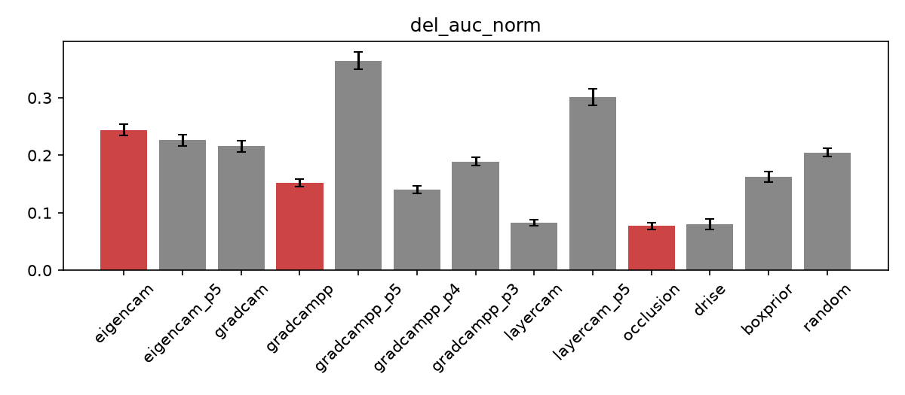
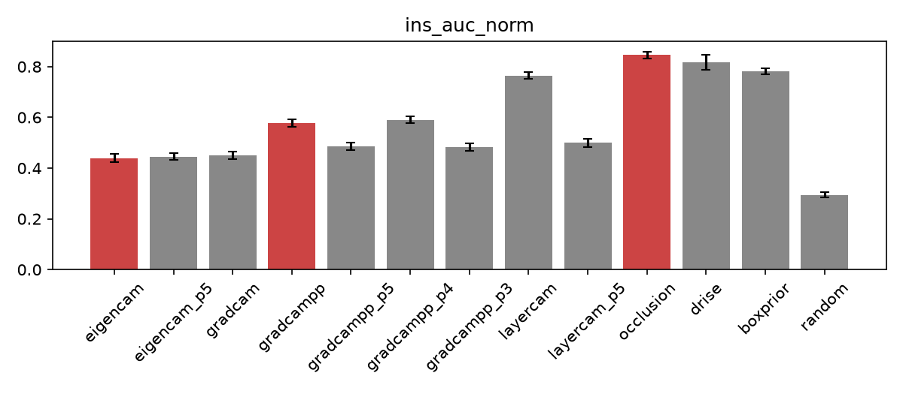
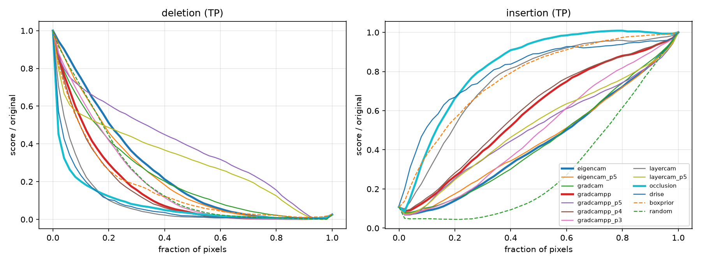
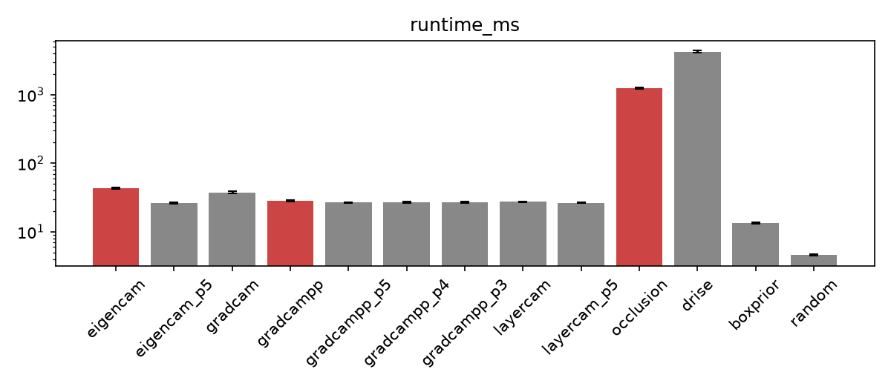
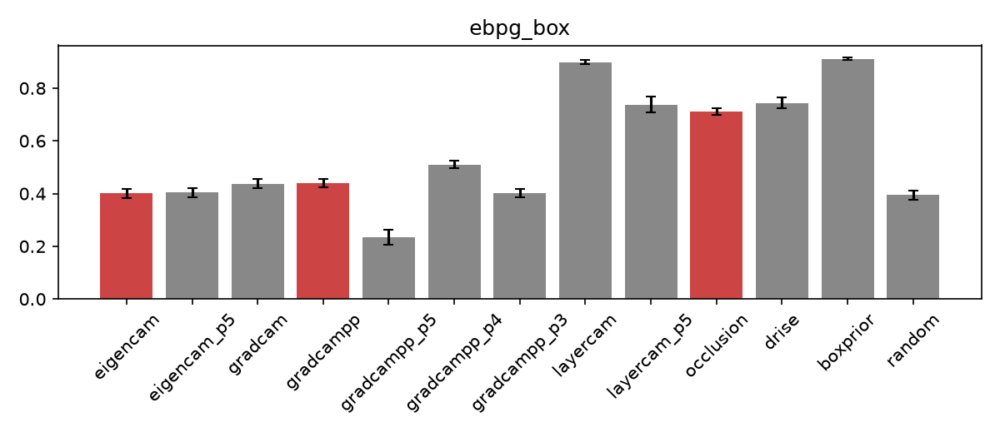
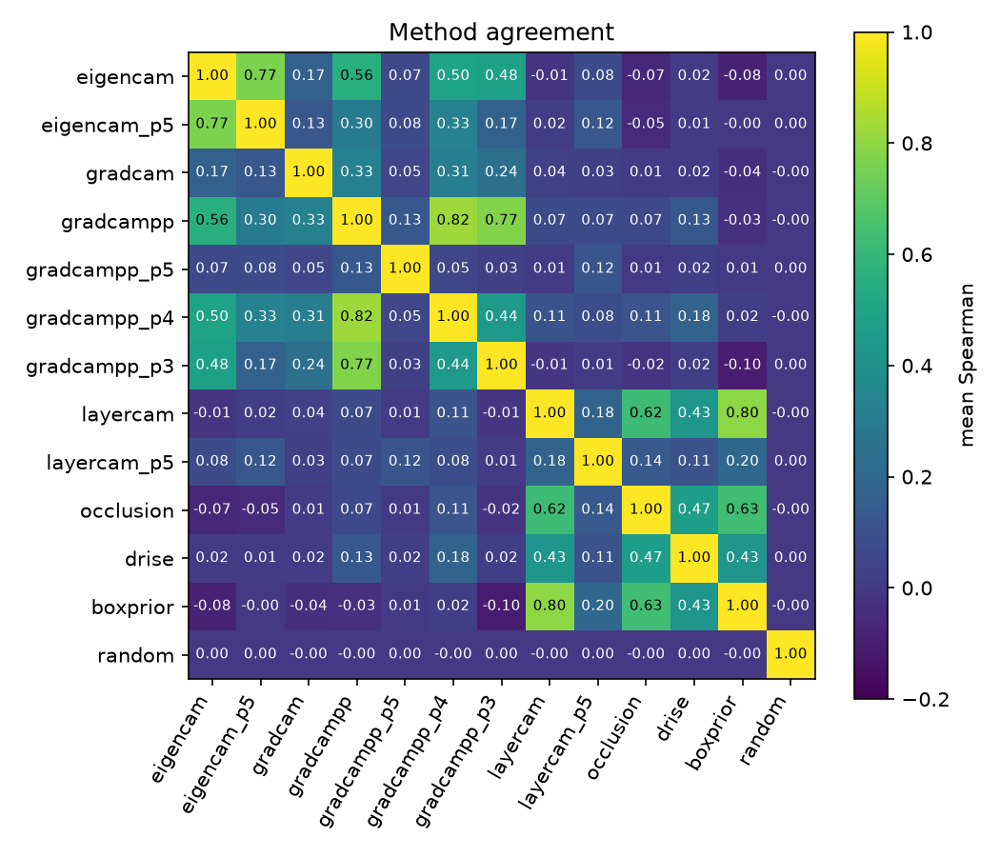
Can the explanation flag a wrong detection?
AUROC for spotting false detections: confidence alone 0.900 → confidence + XAI features 0.906 (+0.006, 95 % CI [0.002, 0.010]). It helps slightly, but the gain is small. Source: results/xai_verification/summary.md.
Heatmaps side by side
Each row is one detection explained by every method. The look-alike rows (mangrove roots) are matched with similar snake rows.
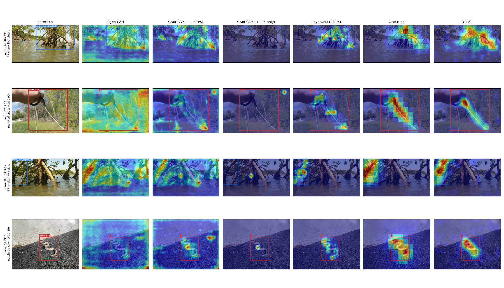
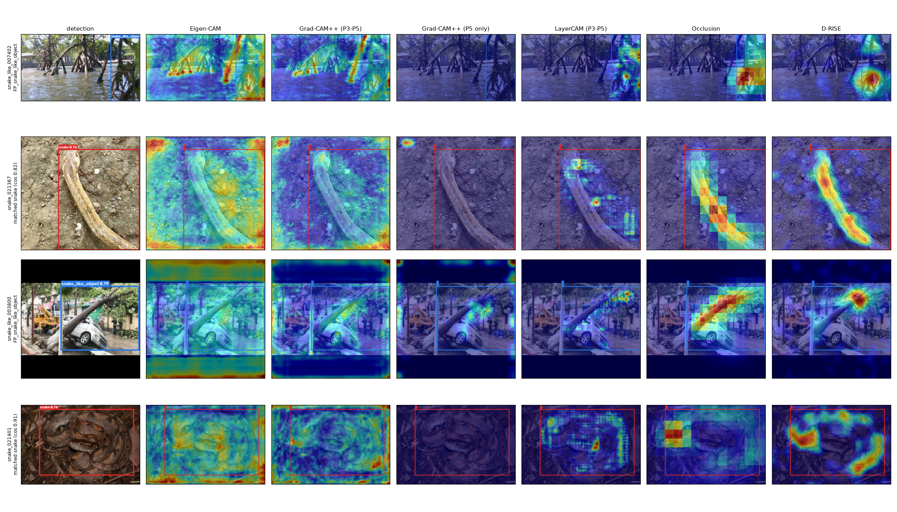
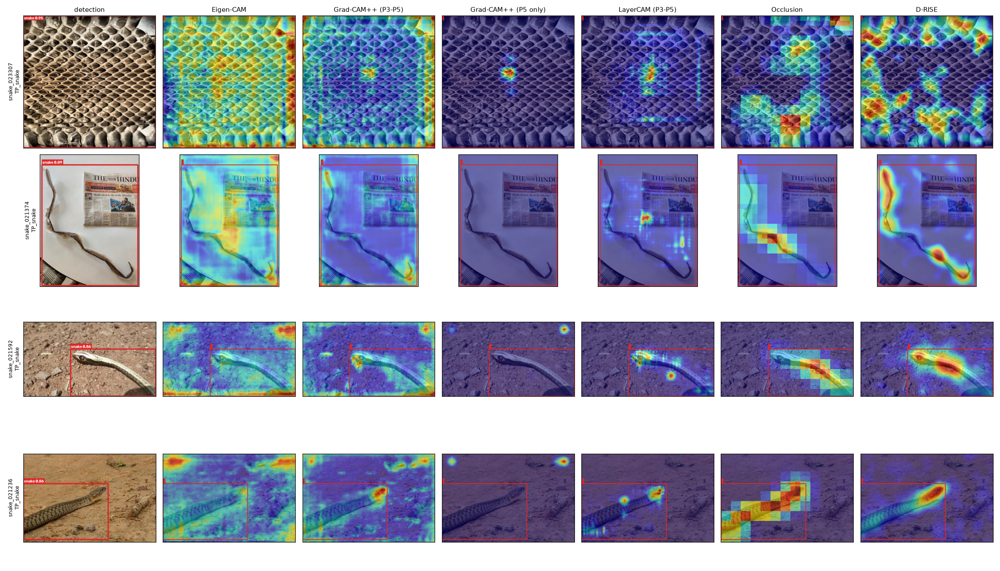
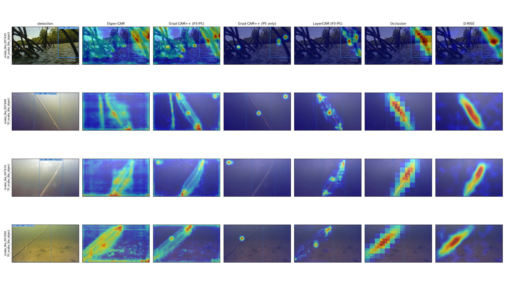
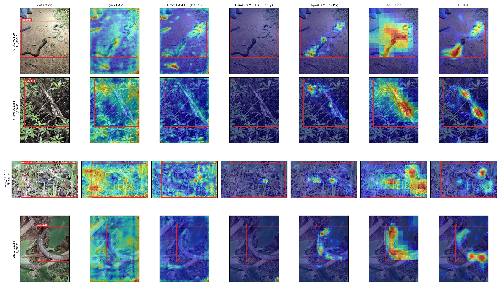
Venom classifier and its XAI (Member B)
EfficientNet-B0 trained on SnakeCLEF 2023 (50,441 images, 1,784 species, 285 medically important venomous). Split by observation; threshold chosen on valid; test evaluated once.
| Method (venomous decisions, n = 160) | Deletion ↓ | Insertion ↑ | Snake-box pointing ↑ | Sanity (head) ↓ | Time |
|---|---|---|---|---|---|
| Grad-CAM++ (3 scales) | 0.840 | 1.088 | 0.937 | 0.78 | 70 ms |
| LayerCAM (3 scales) | 0.850 | 1.208 | 0.993 | 0.80 | 67 ms |
| Grad-CAM | 0.890 | 1.329 | 0.951 | 0.02 | 64 ms |
| Occlusion | 0.902 | 1.217 | 0.761 | – | 1,684 ms |
| RISE / LIME / KernelSHAP (n = 60) | 0.86–0.91 | 1.49–1.53 | 0.87–0.98 | – | ~8,000 ms |
| Eigen-CAM | 1.053 | 1.036 | 0.993 | 1.00 | 208 ms |
| Random | 1.090 | 1.027 | 0.606 | – | 0.4 ms |
Source: results/venom_xai_bench/test_final/analysis/summary.md, write-up in report/B_results.md. Insertion > 1 is possible because scores are normalized by the original probability.
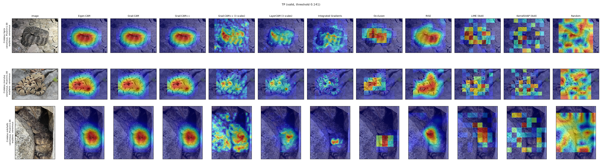
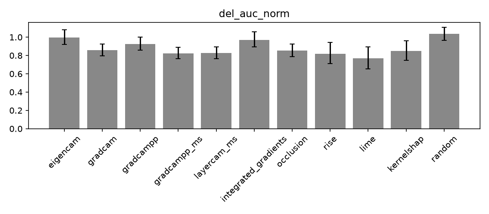
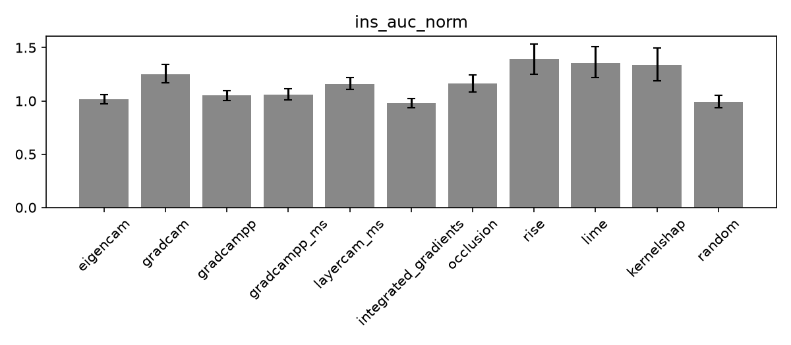
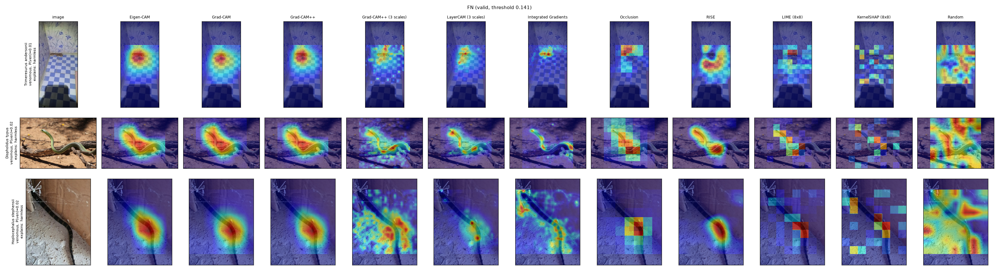
India's Big Four, test recall: cobra 0.96 · saw-scaled viper 0.93 · Russell's viper 0.80 · common krait 0.75 (weakest; small sample). Source: results/venom_clf/b0_reg/species_report_test.md.
What the app shows (backup if the live demo fails)
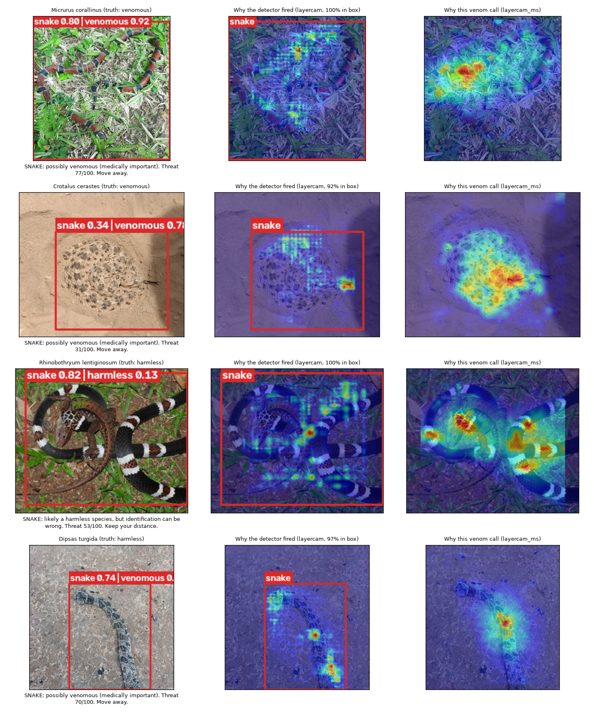
Where everything is saved
| What | Folder / file |
|---|---|
| All XAI comparison tables + graphs, numbered in presenting order | results/XAI_COMPARISON/ |
| Live demo step-by-step | report/DEMO_STEPS.md |
| Detector metrics, confusion, PR curves | results/detector_eval/ |
| Detector XAI comparison (tables, charts, stats) | results/xai_bench/test_final/analysis/ |
| Heatmap grids and matched pairs | results/figures/test/ |
| Can XAI flag wrong detections? | results/xai_verification/summary.md |
| Venom classifier metrics + figures | results/venom_clf/b0_reg/ |
| Venom XAI comparison | results/venom_xai_bench/test_final/analysis/ |
| App screenshots, demo samples | results/app/, results/demo_samples/ |
| Written results | report/A_results.md, report/B_results.md, report/B_report.md |
| Review 2 deck, doc, script | report/SnakeGuard_Review2_15slides.pptx, SnakeGuard_Review2.docx, SnakeGuard_Review2_Script.docx |